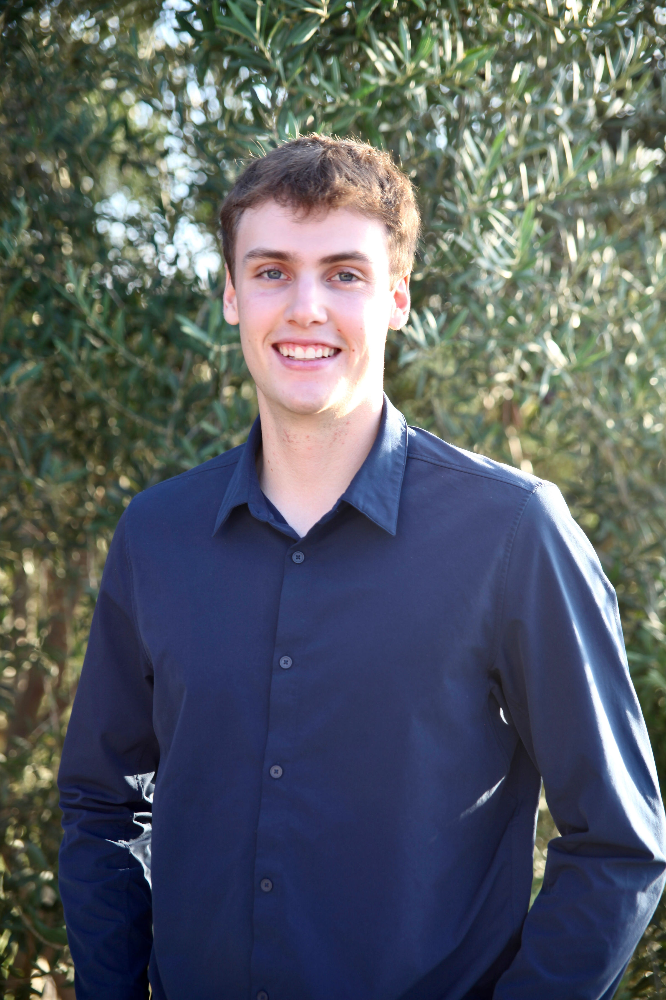

Hewitt Watkins
Software Engineer — ML/AI Systems · Distributed Backend · Computer Vision
B.S. & M.S. CS — UChicago '27
GPA 3.85/4.0
Computer Vision
Move your cursor · keep scrolling
Hewitt Watkins is a Computer Science student at the University of Chicago (B.S. & M.S., expected June 2027), building software across ML/AI systems, distributed backend engineering, and computer vision.

Outside of coursework, Hewitt works as a Conversational AI Research Assistant at the UChicago Human-Robot Interaction Lab, has interned in fintech software engineering at Capital One and in software + AI strategy at AlphaCore Wealth Advisory, and is a co-author on an HRI '26 publication on robot tutor dialogue. Scroll on for the full story — education, work history, a publication, and three projects you can actually watch run.
Trained on real ESA (European Space Agency) spacecraft telemetry archives — power, thermal, attitude, and communications channels — spanning 10M+ records. Conv1D, Hierarchical, and Transformer VAEs, Gaussian Mixture Models, PCA, and K-Means learn what nominal onboard operation looks like, so the system can flag the moment a subsystem starts drifting toward failure, in real time.
Live model replay below ↓High-performance LZW compressor with a scalable 2D lookup table, adaptive pruning, dynamic bit-length encoding, 50%+ compression rates, and custom bit-packing with buffered I/O.
Slotted-page storage engine with heap file interface, buffer pool caching, and space reclamation; volcano-style query execution operators including nested-loop join, hash join, and group-by aggregation.
| orders | |
|---|---|
| id | cust |
| customers | |
|---|---|
| cust | name |
| order | cust | name |
|---|
A simulated real-time pass of the trained VAE / GMM anomaly pipeline over an onboard telemetry window. All three views are driven by the same underlying drift signal, so the strip chart, the latent space, and the reconstruction-error trace flag the anomaly at the exact same instant. The loop auto-replays.
Each project sits on its own Z-plane inside the same tilting scene. Scrolling doesn't fade between them — it physically pulls the active project toward you while the other two recede into the dark.

Weekend rounds and a reliable excuse to be outside.
Fast hands, faster trash talk.


Three good reasons to take a break.